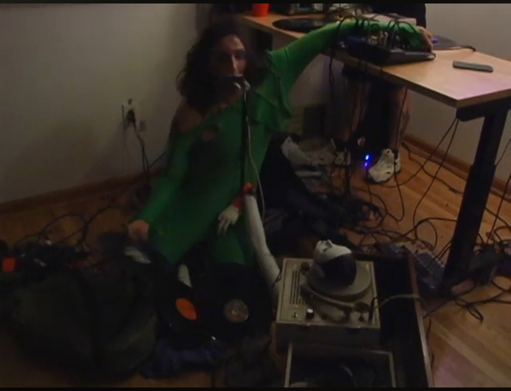

TFFNI

https://tffni.bandcamp.com/
Heavily indebted to the dada performance tradition, TFFNI exists at the sonic crossroads of toy, prop, and tool.
Layers of tape and shattered records swing the pendulum between sound and body to explore the liminal spaces within.
Grinding incantations for a play without an end.